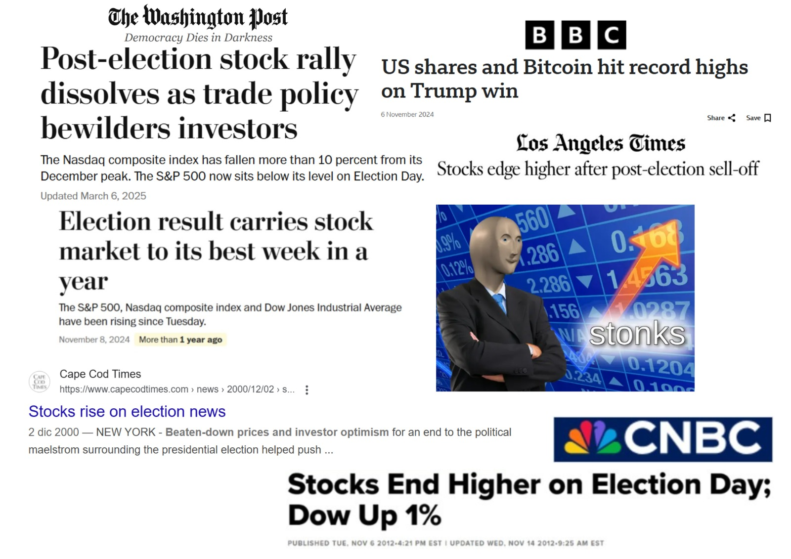
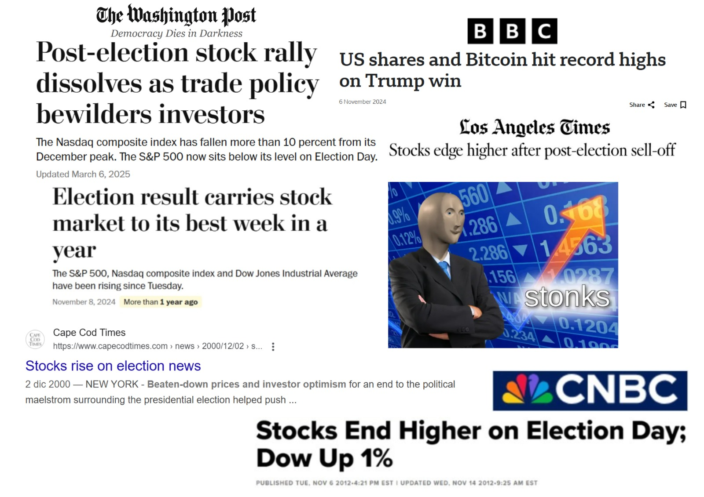

King of White House, Wolf of Wall Street: How US presidential election impact companies' performance on the stockmarket
Brought to you by Team Adacore: Ghassan ABBOUD, Eliota BRAHA, Nicolas PAFUMI, Asia PEDROIA, Elsa SÁNCHEZ FERNÁNDEZ


 

Abstract
It is an established fact that presidential elections have a significant impact on the stock market.
Investors react
to the uncertainty and potential policy changes that come with a new administration. Understanding these
dynamics
can help investors anticipate these movements and hedge their portfolios around election cycles. These
insights also
provide a window into the market's perceptions of different candidates and their proposed policies.
In this project, we explore how presidential elections influence company performance and investor sentiment
over
time. Using historical stock market data, election results, and prediction market trends, we look at how
markets
move as the likelihood of one candidate winning changes. We focus especially on how different sectors for
example
like technology, energy, healthcare, and finance, respond to the uncertainty and outcomes of election
cycles.
Our goal is to show how politics and markets move together in a clear, data-driven way. By analyzing past
elections
and the upcoming 2024 race, we hope to uncover patterns that explain when, why, and how the market reacts.
Research questions
Can we describe an entire sector? Do sectors have any significance in terms of shared financial behaviour? are they affected differently? Which sectors are most affected by presidential elections? What characteristics of elections lead to increased volatility? Does the president's party differentiably impact certain sectors? To answer these questions, we will use historical stock market data and publicly available election data. We will also use prediction market data as proxy for the perceived probability of each candidate winning.
Nasdaq who?
[description: a ecrire, mention sectors and a description of what they are, mention stock vs ETF] [questionnaire] [petits graphes de visualization]